Training & Credentials
Certifications &
Professional Training


An Economics graduate with hands-on quantitative research experience, two peer-reviewed publications, and a track record of leading academic and community initiatives across Bangladesh.
"Research is my lens for understanding development — and my tool for changing it."
Md. Yosuf is an Economics graduate of Govt. Titumir College, University of Dhaka, with a demonstrated foundation in quantitative research, development economics, and academic writing. His academic interests are motivated by a sustained inquiry into the structural causes of economic exclusion, and by a commitment to rigorous empirical research as a basis for evidence-informed policy.
His research experience includes service as a Research Assistant on two government-funded health research projects — one under the Social Science Research Council, Ministry of Planning, and the other under the Bangladesh Medical Research Council — through which he gained direct experience in field data collection, research coordination, and ethics-compliant project implementation.
As a Research Assistant (Intern) at the Accident Research Institute (ARI), BUET, he drafted technical proposals on road safety and conducted systematic literature reviews, maintaining structured reference databases using Zotero. Through the Environmental Awareness project at Government College, Dhaka, he co-authored a peer-reviewed article published in the Asian Review of Social Sciences (2026), contributing literature synthesis, fieldwork across more than 400 respondents, and SPSS/STATA-based statistical analysis.
The same project produced a second co-authored article — Environmental Awareness of the Government College Students in Dhaka City: Sources, Demographic Influences and Pathways for Improvement towards Achieving SDGs — published in the International Journal of Social Science Research and Review (2026). He subsequently led an independent cross-sectional study on smartphone addiction and academic performance among undergraduate students in Dhaka, presented as a conference paper at the LURS 3rd Student Research Conference 2026.
Beyond research, he has taught undergraduate economics for nearly three years, served as Vice President of the Govt. Titumir College Research Club, and founded the 7 College Entrepreneur Forum. He is currently preparing for graduate study in Development Economics.
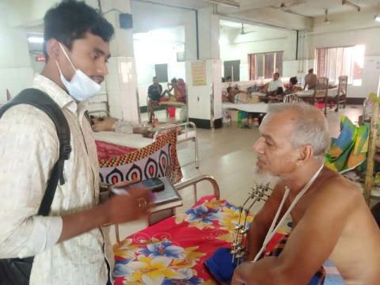
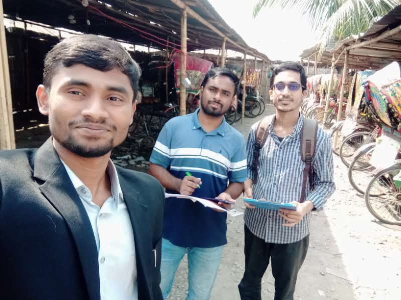
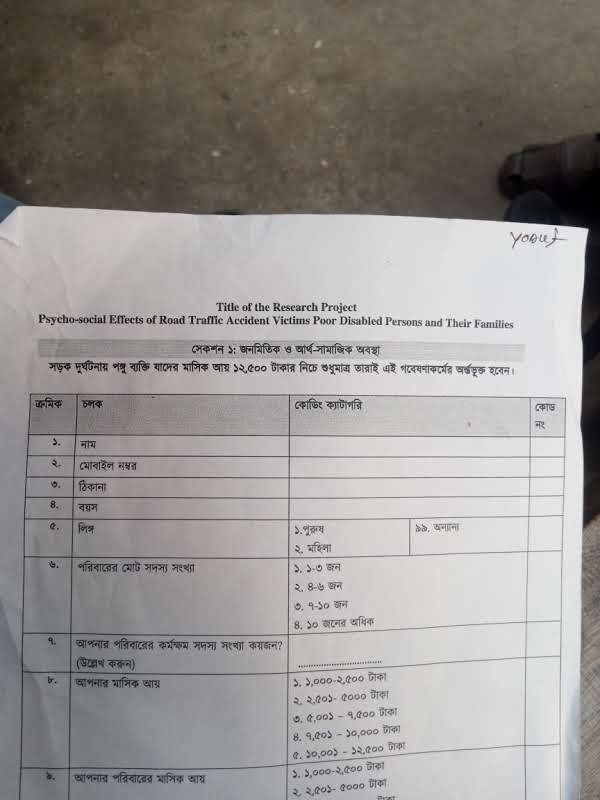
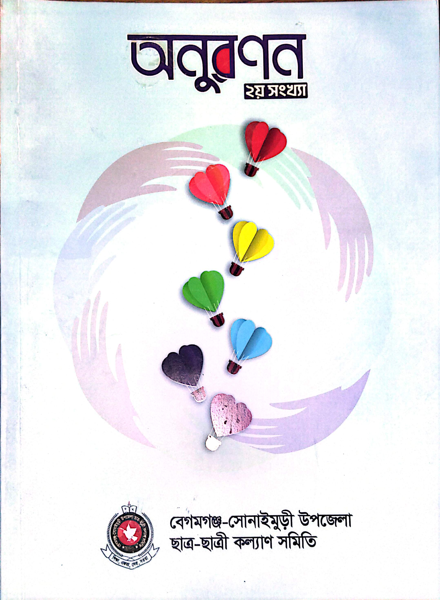
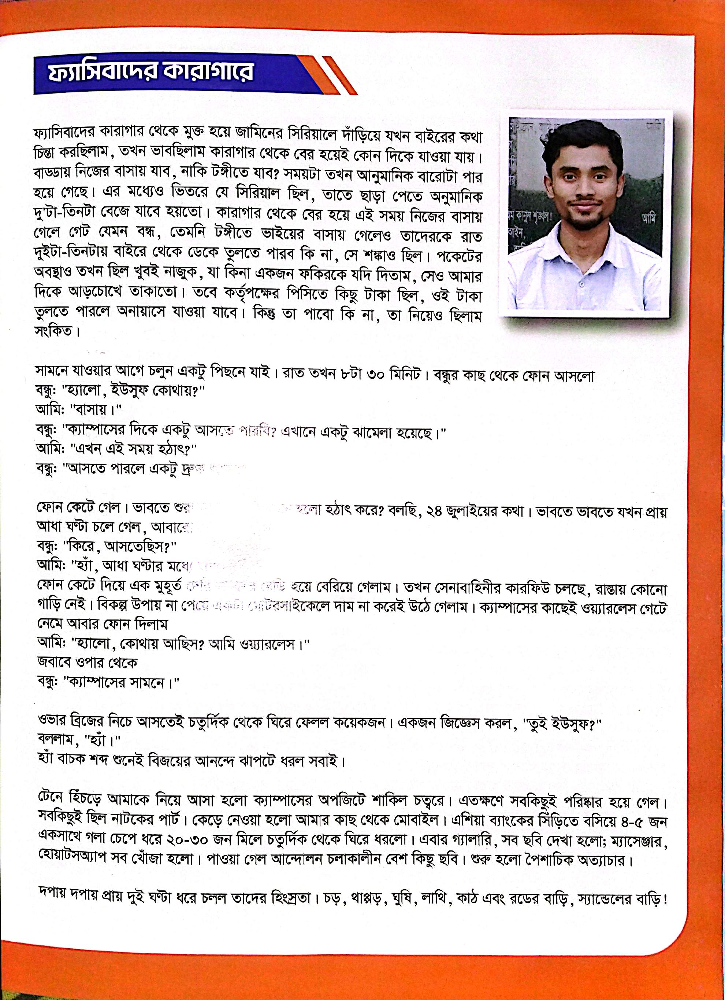
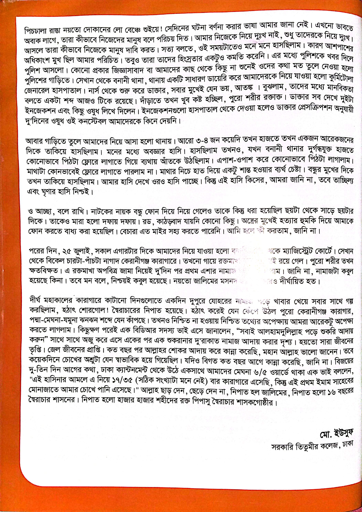
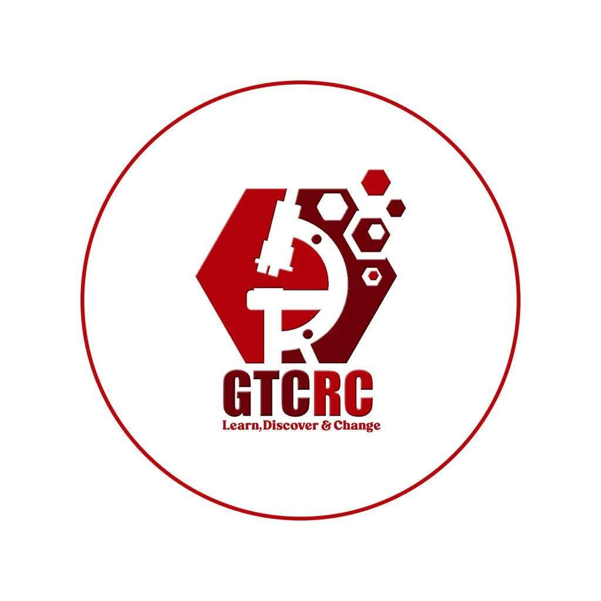
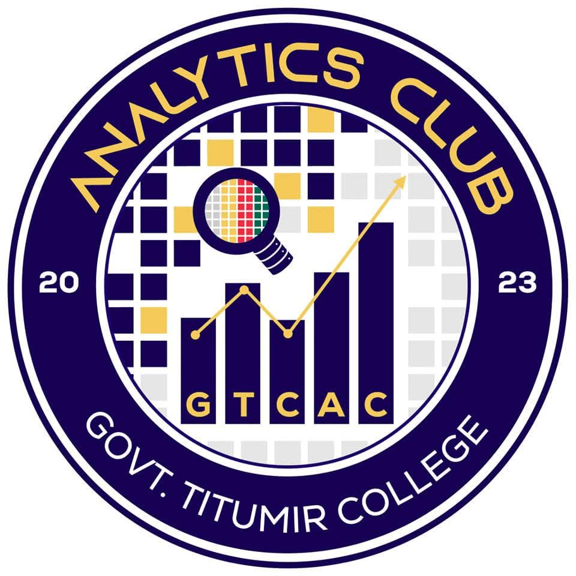
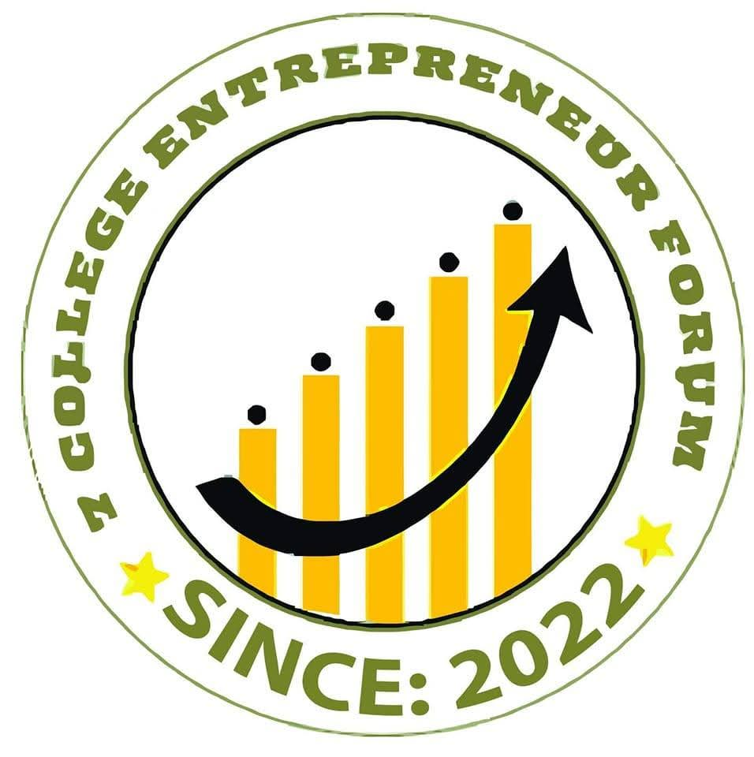
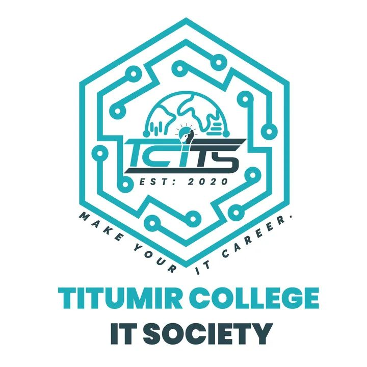
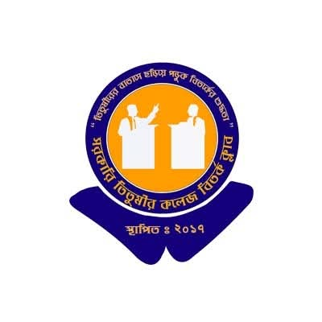
"Yosuf's dedication to research methodology and data analysis is evident in both his academic output and his leadership of the research community."